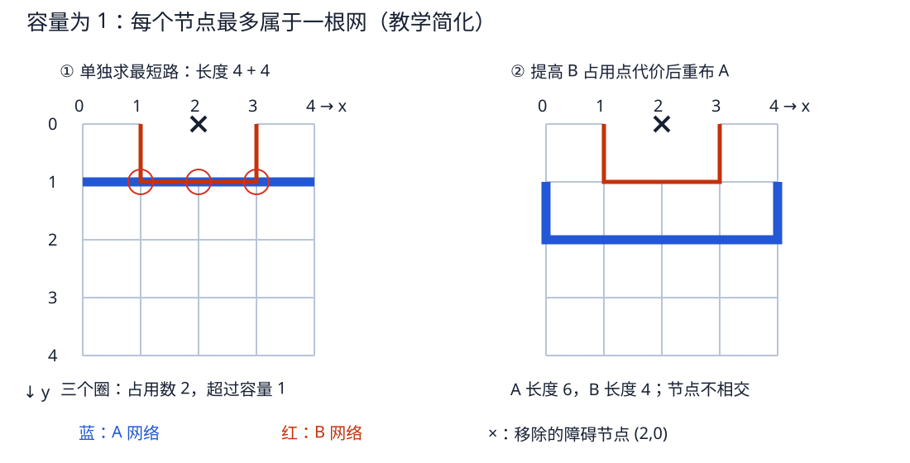

第 20 章 亲手运行 Euler 与最短路
把图、路径、代价、冲突变成纸上能算和程序能断言的对象
20.1 同一只 NAND，可以画两种完全不同的图
扩散图把电气网络作为顶点、MOS 作为带栅名标签的边，关注相邻器件能否共享扩散。布线资源图把层上的可用位置作为顶点、合法走线或通孔作为边，关注一根网能走到哪里。前者的顶点 Y 是一整张电气网络，后者的一个顶点只是一处物理资源；把二者混在一起就无法理解布局与布线的分工。
20.2 两条 Euler 路如何给出上下行共同栅顺序
| 行 | 器件边 | 一条合法遍历 | 栅顺序 |
|---|---|---|---|
| NMOS | A 连接 VSS/X，B 连接 X/Y | VSS —A— X —B— Y | A，B |
| PMOS | A 与 B 分别连接 VDD/Y | VDD —A— Y —B— VDD | A，B |
Euler 路的目标是每条器件边恰好经过一次，允许重复经过顶点。PMOS 两条边虽然端点相同，仍是不同器件，必须在程序里保留各自 ID；用不支持平行边的简单图可能错误地把它们合成一条。两行都取 A/B 顺序，可把两个栅列上下对齐，并在每行内部共享中间扩散。
这只是候选布局，不证明井、接触孔、不同 W、引脚接入和全部 DRC 都合法。若没有共同顺序，可以接受某些扩散断开、改变分区或用另一布局算法。入门时先明确约束，再谈“最优”。
20.3 Dijkstra 不会选边数最少而代价更大的路
有向教学图有 S→A 代价 1、A→T 代价 9、S→B 代价 3、B→C 代价 1、C→T 代价 1。两条候选分别是 S-A-T（两条边，总代价 10）和 S-B-C-T（三条边，总代价 5）。权重可代表线长、通孔或拥塞惩罚，不总等于一条边一次计数。
| 取出最小暂定距离顶点 | 新确定/更新 | 为什么 |
|---|---|---|
| S，0 | A=1，B=3 | 先放入起点的出边 |
| A，1 | T=10 | 经过 A 到 T 为 1+9 |
| B，3 | C=4 | 经过 B 为 3+1 |
| C，4 | T 从 10 改成 5 | 发现更便宜的前驱，称为松弛 |
| T，5 | 结束并沿前驱回溯 | 非负权重下，取出的最短距离已确定 |
不是第一次“发现 T”就停止，而是 T 作为当前最小距离被正式取出才停止。代码用最小堆 heapq 高效取最小项；若堆中存在旧的 T=10 项，靠距离比较跳过。普通 Dijkstra 不适用于负权重，别把奖励直接设成负边而不更换算法。
20.4 5×5 网格：两根网分别最短，合起来却冲突

坐标 x/y 均取 0～4，移除障碍 (2,0)，相邻水平/垂直点之间每步代价 1。A 从 (0,1) 到 (4,1)，B 从 (1,0) 到 (3,0)。初始单独求路：A 沿 y=1，长度 4；B 绕开障碍，也经过 (1,1)、(2,1)、(3,1)，长度 4。三个节点的占用数都是 2，而教学容量是 1，所以不能一起交付。
保留 B，给 B 占用的每个节点增加 10 的代价，再求 A。A 选择经 y=2 的六步绕路，不再和 B 共用节点；线长增加了 2，但组合结果满足本例容量限制。这展示了“先允许竞争、再让冲突资源变贵”的直觉。
20.5 运行、修改和解释断言
cd /home/jasper/code/docs/std-cell
python examples/learning/algorithms.py仅依赖 Python 标准库。脚本打印所有路径，断言共同栅顺序 A/B、最小代价 5、初始三个冲突点、重布后无共用节点，以及 A/B/新 A 的代价 4/4/6。改图时先预测输出，再改代码；断言失败是在提醒你的预期需要核对，不要直接删掉。
- 若 A→T 的权重改成 2，最短路变成什么？
- 给冲突节点增加代价后，为什么“总线长更大”不代表优化失败？
- 把两条并联 PMOS 合成一条无 ID 边，会破坏哪个不变量？
答案
① S-A-T，总代价 3。② 单根线长不是唯一目标，必须先满足所有网同时可布、无非法占用。③ 每个物理晶体管恰好安排一次；少了一条边就是丢器件，不是算法变聪明。